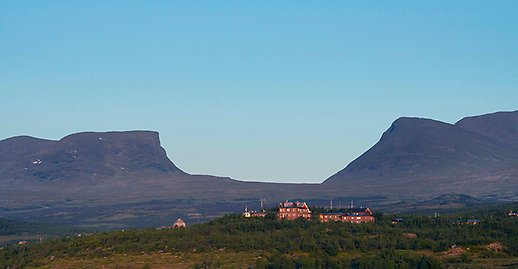

<!DOCTYPE html>
<html>
<head>
    <meta charset="UTF-8">
    <meta name="viewport" content="width=device-width, initial-scale=1.0">
    <title>2023 Summer Trip</title>

    <!-- Leaflet CSS -->
    <link rel="stylesheet" href="https://unpkg.com/leaflet@1.7.1/dist/leaflet.css" integrity="sha512-xodZBNTC5n17Xt2atTPuE1HxjVMSvLVW9ocqUKLsCC5CXdbqCmblAshOMAS6/keqq/sMZMZ19scR4PsZChSR7A==" crossorigin=""/>

    <!-- CSS -->
    <link rel="stylesheet" href="mapstyles.css">

    <!-- Leaflet JavaScript -->
    <script src="https://unpkg.com/leaflet@1.7.1/dist/leaflet.js" integrity="sha512-XQoYMqMTK8LvdxXYG3nZ448hOEQiglfqkJs1NOQV44cWnUrBc8PkAOcXy20w0vlaXaVUearIOBhiXZ5V3ynxwA==" crossorigin=""></script>
   
    <!-- JQuery -->
    <script src="https://ajax.googleapis.com/ajax/libs/jquery/3.6.3/jquery.min.js"></script>
    
    <!-- Leaflet.Geodesic -->
    <script src="https://cdn.jsdelivr.net/npm/leaflet.geodesic"></script>

    <style>
        @font-face {
            font-family: Trueno;
            src: url(../font/trueno_round_bold.otf);
            font-weight: bold;
        }
    </style>
</head>
<body onload="fitBounds()">
    <div id="map"></div>
    <script src="travel/constants.js"></script>
    <script>
        const abiskoParagraf = "Forskarmöten är Sveriges unga akademis sommarforskarskola. Här får man möta yngre, ledande forskare inom olika fält.<br>Forskarmöten anordnas i Abisko, i vacker fjällmiljö. <br>En av dagarna är förlagd till forskningsstationen i Abisko."
        const s23step1 = new L.Geodesic([MSP, AMS], air).addTo(lines);
        const s23step2 = new L.Geodesic([AMS, ARN], air).addTo(lines);
        // Saker
        L.marker([59.37578177463682, 17.03763301315459], {icon: schoolIcon}).bindPopup("<span style='font-family: trueno'><h2 style='margin: 0; padding: 0;'><span style='color: #dc0d04'>RAYS*</span> Sommarforskarskola</h2><h4 style='margin: 0; padding: 0'>* For Excellence</h4><p>Fyra Veckor från 16 Juni till 14 Juli av verklig utföring och framställing av forskning ur Europaskolan i Strängnäs.</p><h3><a href='https://raysforexcellence.se/' style='color: #dc0d04'>www.raysforexcellence.se</a></h3></span>").addTo(map);
        L.marker([68.35461541662688, 18.815882295171267], {icon: schoolIcon}).bindPopup(`<span style='font-family: trueno'><h2 style='margin: 0; padding: 0;'><span style='color: #544595'>Forskarmöten i Abisko</span></h2><h4 style='margin: 0; padding: 0; color: #28214a'>Sommarforskarskolan</h4><p>${abiskoParagraf}</p><h3><a href='https://www.sverigesungaakademi.se/2621.html' style='color: #544595'>Sveriges Unga Akademi</a></h3></span>`).addTo(map);
        
        // Flygplatser
        L.marker([44.8848, -93.2223], {icon: airportIcon}).bindPopup("<span style='font-family: trueno'><h1 style='color: #0A202C'>MSP</h1><p>Minneapolis–Saint Paul International Airport</p>").addTo(map);
        L.marker([52.3105, 4.7683], {icon: airportIcon}).bindPopup("<span style='font-family: trueno'><h1 style='color: #0A202C'>AMS</h1><p>Amsterdam Airport Schiphol</p><i>Koninklijke Luchthaven Schiphol</i>").addTo(map);
        L.marker([59.6494, 17.9343], {icon: airportIcon}).bindPopup("<span style='font-family: trueno'><h1 style='color: #0A202C'>ARN</h1><p>Stockholm Arlanda Airport</p><i>Stockholm-Arlanda flygplats</i>").addTo(map);
        
        // Boenden
        L.marker([59.4419, 18.0703], {icon: hostelIcon}).bindPopup("<span style='font-family: trueno'><h1 style='color: #0A202C'>Parkvägen 11</h1><p>Hus</p>").addTo(map);

        lines.addTo(map)
        fitBounds()
    </script>
</body>
</html>